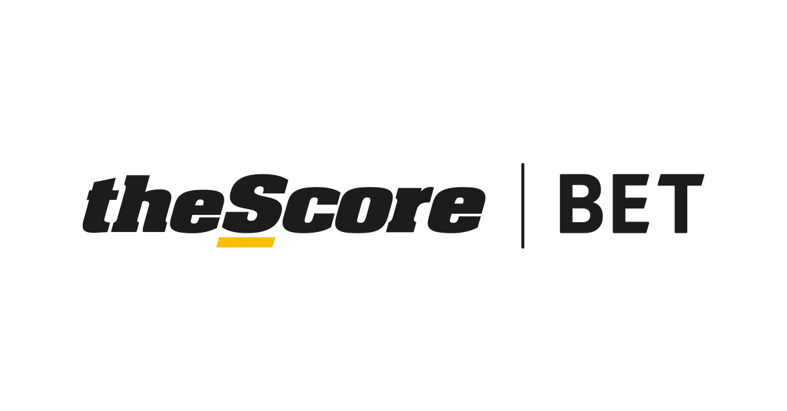

During my first work term, I spent the time working as a QA Analyst on the Promotions team, specifically working on
theScore's betting app, theScoreBet. This journey was a great experience as I was surrounded by an amazing environment of positive and like-minded
individuals, while having the opportunity to learn life long goals and skills.

Score Media and Gaming Inc.
empowers millions of sports fans through its digital media and sports betting products. Its media app ‘theScore’ is one of the most popular in North America, delivering fans highly personalized live scores, news, stats, and betting information from their favorite teams,
leagues, and players. The Company’s sports betting app ‘theScore Bet’
delivers an immersive and holistic mobile sports betting experience and is currently available to place wagers in New Jersey, Colorado, Iowa and Indiana. theScore also creates and distributes innovative digital content through its web, social and esports platforms.
This journey started back in April where I came across an open posiiton for a QA Analyst
at theScore. It was extremely busy during this time as I was interviewing for several other
companies as well as finishing the last of my exams for the school year. After applying, I was reached out
a week later where I was offered two interviews. The interview process was smoooth as I had the opportunity
to demonstrate my passion for the sports industry, while illustrating my problem solving and critical
thinking skills. Later that day, I had received a call where I was offered the position. The onboarding process
was fairly quick as I provided with of the neccessary equipment to start the week after.
At the start of the internship, there was a lot of information to cover, such as documents, artifacts,
services, and different software tools. It was overwhelming at first, but after asking a lot of questions
and understanding the systems it became second nature. Everybody was extremely supportive and helpful whenever
there were any issues.
As a QA Analyst, my main focus was on the delivery of high quality releases to satisfy
product requirements to meet user expectations. Some of these tasks include:
-
Creating document test plans, test cases and utilize validation techniques for application
functionality
-
Participating in bug prioritizing, priority assessment and coverage tracking of reported bugs
within the defect tracking system
-
Communicating with product, design and executive teams through reports to identify and solve
quality issues
There were a variety of goals I wanted to accomplish during my time at theScore.
These goals were a great way to meet different milestones throughout my work term.